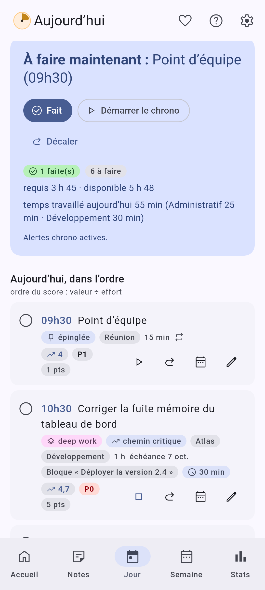
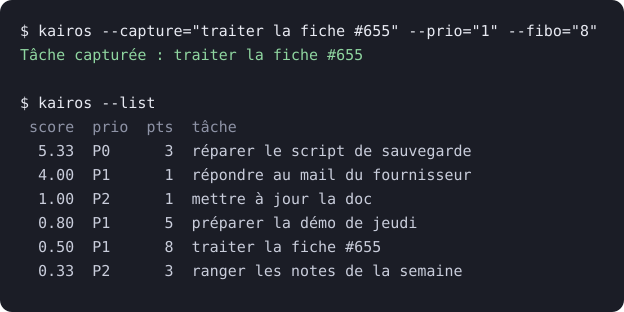

L’histoire de Kairos
Tu captures. Kairos décide.
Il est 13 h. Tu as une réunion jusqu’à 14 h. Ta liste contient 47 tâches, et pas une ne te dit « commence par moi ».
Dix d’entre elles y traînent depuis des semaines. Dans tous les outils de todo que j’ai essayés, ce qu’on ne fait pas ne remonte jamais : les nouvelles tâches s’empilent par-dessus, les anciennes s’enfoncent. Chaque matin, il faut retrier la liste de tête avant de pouvoir travailler.
La pile est infinie. Autant que l’outil la trie à ta place.
Le constat
Les outils de todo gèrent une liste, plus ou moins finement. Aucun ne la trie. J’ai eu l’idée de fusionner trois mondes : le développement agile (un backlog qu’on priorise en continu), un outil de todo et la méthode GTD (tout capturer, puis traiter).
Le résultat : une liste qui évolue toute seule avec le temps. Tu t’occupes de GTD, Kairos te dit par quoi commencer. Tu peux lui faire assez confiance pour te décharger l’esprit, et mettre ton attention ailleurs que dans la gestion des todos.

Comment c’est arrivé
- Un script. La première version tenait dans un terminal Linux : un script Python qui classait mes tâches avec le score WSJF, et rien d’autre. Ça marchait, et ça changeait mes journées.
- Une interface. Puis une vraie interface, servie en local et lancée avec systemd. Le jour où j’ai compris que le plus utile n’était pas le tri mais de placer les tâches dans les trous de l’agenda, l’outil a pris sa forme.
- Les autres. En en parlant autour de moi, j’ai vu que ce besoin n’était pas que le mien. Un outil qui ne marche que sur ma machine, avec un service à installer à la main, ne servait personne d’autre.
- Tout reconstruire. J’ai tout reconstruit en Kotlin avec Claude Code, pour que ça tourne partout : Android, Windows, Linux, macOS et navigateur, sans compte ni réseau.

Pas d’IA : du machine learning
Les idées suivantes sont venues avec l’envie de faire du machine learning et des statistiques fines sur sa propre façon de travailler. Pas d’IA générative, pas de chatbot, pas de cloud : de l’algorithmique pure, sur ton appareil, qui s’affine avec le temps et t’aide à comprendre comment tu travailles.
L’objectif : plus tu utilises Kairos, mieux il estime le temps que tu vas passer à faire les choses, et il te dit toujours quelle tâche faire maintenant.
Pourquoi 14h55
14h55 est le nom de code du projet.
Selon un sondage réalisé en 2013 par LondonOffices.com auprès de plus de 400 salariés britanniques, 14 h 55 serait le moment de la journée où la productivité au travail est la plus faible. Ce résultat repose toutefois sur une enquête déclarative, et non sur une étude scientifique évaluée par les pairs.
Il s’inscrit néanmoins dans un phénomène mieux établi par la recherche : le « creux de l’après-midi » (post-lunch dip), une baisse transitoire de vigilance et de performance généralement observée entre 14 h et 16 h. Les travaux sur les rythmes circadiens et la fatigue cognitive montrent en effet que l’attention peut diminuer après le déjeuner, avant de remonter en fin d’après-midi.
Sources : Daily Mail, « 2.55pm, the time when no work is done! » (2013) ; Metro, « 2.55pm revealed as most unproductive time of day in offices » (2013) ; Valdez et al., « Circadian Rhythms in Attention », Yale Journal of Biology and Medicine (2019) ; Sievertsen, Gino & Piovesan, « Cognitive fatigue influences students’ performance on standardized tests », PNAS (2016) .
Quand on y pense, c’est plutôt vrai. J’ai trouvé intéressant d’en tenir compte : Kairos protège tes créneaux de deep work et, l’après-midi, laisse passer les tâches légères avant les complexes.
Qui a fait quoi
Claude Code m’a permis de tout reconstruire en Kotlin. L’IA est ma plume et un accélérateur de création ; le reste est de moi : j’ai fixé le cap, planifié, guidé dans le détail, écrit les spécifications, corrigé, structuré le code, mis en place la CI et les builds, cadré les bornes et apporté la théorie. Chaque changement commence par une spec, avant le code.
Je réponds à chaque retour
Kairos est le premier logiciel que je publie, et je réponds à chaque issue. Quelques exemples :
- #150 : une demande de widget pour l’écran d’accueil d’Android. La version 3.12 le livrait le lendemain, et ce que j’ai repensé en le faisant a donné la saisie rapide.
- #88 : synchroniser ses appareils sans compte. Plus gros que prévu, avec beaucoup de cas limites ; livré en 4.0 : un fichier commun, fusionné sans rien perdre.
- #65 : un plantage au démarrage que je ne pouvais pas reproduire. La 3.3.0 a ajouté un écran de rapport de plantage, qui reste sur ton appareil et n’est envoyé que si tu le partages.
- #131 : trop de réglages en vrac. Ils sont rangés par catégorie, avec une icône chacune, depuis la 3.7.
Ce que je ne cache pas
- Les applications macOS ne sont pas signées : l’adhésion au programme développeur d’Apple coûte 99 $ par an, et je ne l’ai pas prise (#116). Au premier lancement, macOS te demande de confirmer.
- Sous Windows, la signature est prête côté projet et attend l’admission chez SignPath (#117). D’ici là, SmartScreen peut afficher « Windows a protégé votre PC ».
- L’APK Android est signé, sa construction est reproductible, et chaque version publie ses sommes de contrôle (SHA256SUMS) : tu peux vérifier ce que tu installes.
Kairos n’est peut-être pas pour toi si…
- tu veux travailler à plusieurs en temps réel : Kairos n’a ni compte ni serveur. L’espace Équipe est pensé pour un manager seul, avec des échanges de fichiers ;
- tu attends une IA générative, un assistant qui te répond : Kairos n’a ni chatbot ni cloud ;
- tu aimes ranger ta liste à la main, avec tes étiquettes et tes vues : tu peux régler les poids du score et épingler une heure, mais l’ordre, c’est Kairos qui le décide.
On en parle
- AlternativeTo : la fiche de Kairos, pour la noter ou la proposer comme alternative à une autre application.
- r/foss : le post de présentation (octobre 2026, en anglais).
- WhatWeMade: presentation post on whatwemade.
Tu captures. Kairos décide.